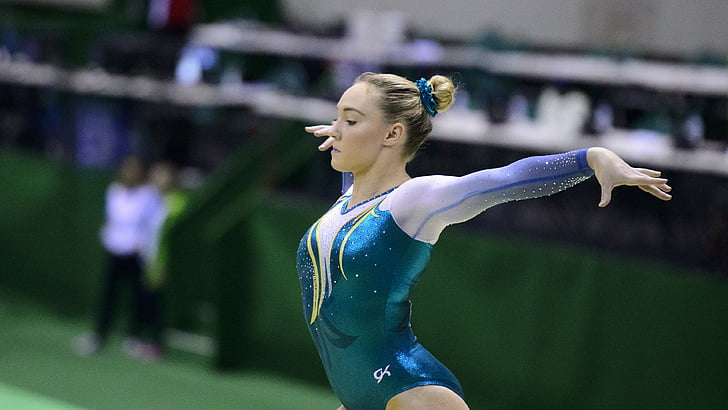

Jimnastik, esneklik ve dayanaklılık gerektiren bir spor dalı olduğu için küçük yaşlarda başlanması gerekiyor. Küçük yaşlarda kaslar sertleşmediği ve vücut daha rahat şekil aldığı için çocuğunuzu küçük yaşlarda bu spor dalıyla tanıştırabilirsiniz. Erkek ve kızlarda farklı hareketler bulunuyor. Erkekler aletsiz olarak yer hareketleri, aletli olarak da barfiks, beygir, halka ve paralel hareketleri yapıyorlar. Kızlar da yer hareketleri, atlama beygiri, denge ve paralel hareketleri yapıyorlar. Yer hareketlerinde belirli hareketler bulunuyor. Düzenli ve estetik açıdan zıplama, parende atma, takla atma hareketleri yapılıyor. Aletli hareketlerde, puan olarak değerlendirilecek, ters dönme, takla atma, kollar üzerinde durma hareketleri yapılıyor. Spor salonlarında vücuda esneklik ve form kazandırmak için jimnastik egzersizleri de yapabilirsiniz. Fitness hocaları eşliğinde bacak açma, germe, kol, bacak ve kalça kaslarını sıkılaştırma egzersizleri yapabilirsiniz. Jimnastik ve spor salonlarında yapılan esneklik ve dayanıklılık egzersizlerini evinizde de düzenli olarak yapabilirsiniz. Bu hareketleri istediğiniz yaşta yapabilirsiniz.

Jimnastik; artistik, ritmik ve genel olmak üzere 3 branşa ayrılmıştır.
1- Artistik jimnastik;
Erkekler için; Yer, kulplu beygir, halka, atlama beygiri, paralel, barfiks
Bayanlar için; Atlama beygiri, kız paraleli, denge, yer, asimetrik dalları bulunuyor.
2- Ritmik jimnastik; Sadece bayanların yarıştığı bir spor dalıdır. Bayanlar; oyunculuk, bale, müzik ve pandomim sergileyerek hareketleri icra ediyorlar. Hareketlerinde; çember, top, kurdele, ip, lobut eşyalarından birini kullanıyorlar.
3- Genel jimnastik; Gösteri amaçlı yapılıyor. Her ülkenin kendi yarışma kuralları geçerlidir. Hareketler; serbest spor kıyafetleriyle müzik eşliğinde yapılır. Diğer branşlarda bireysel yarışılmasına rağmen, bu branşta gruplar ön plandadır. Alet kullanmak serbesttir. Dans ve belirli bir tema işlenerek çeşitli jimnastik hareketlerini yapıyorlar.
Her alette hem zorunlu hem de serbest hareketler bulunuyor. Zorunlu hareketler komitenin belirlediği, yapılması mecbur hareketlerdir. Serbest hareketler ise, yarışmacıların kendi oluşturdukları koreografilerden oluşuyor.